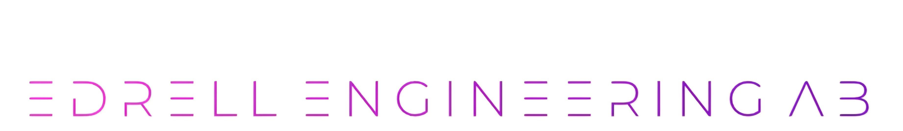

Jag är en erfaren projektledare och koordinator med bakgrund inom mekanik, produktutveckling, produktvård, inköpskvalitet och industrialisering.
Genom arbete i komplexa utvecklingsprojekt, bland annat inom försvarsindustrin, har jag tagit ansvar för produkter, projekt och tvärfunktionella team med fokus på helhet, kvalitet och leverans.
Jag arbetar i gränslandet mellan teknik, struktur och ledarskap och drivs av att skapa tydlighet, effektivitet och förbättrade arbetssätt.
Kvalitet, processutveckling, verksamhetsutveckling, förändringsledning och projektledning.
Kontakta mig gärna för samarbeten eller uppdrag inom mekanikkonstruktion, projektledning och verksamhetsutveckling.
E-post: jennifer@edrellengineering.com
Telefon: +46 73 95 20 516